Table of Contents
1 Gallery
1.1 ToggleBackgroundColor

1.2 ProfileCard

1.3 ProfileCardThumbnail

1.4 BackfaceVisibility
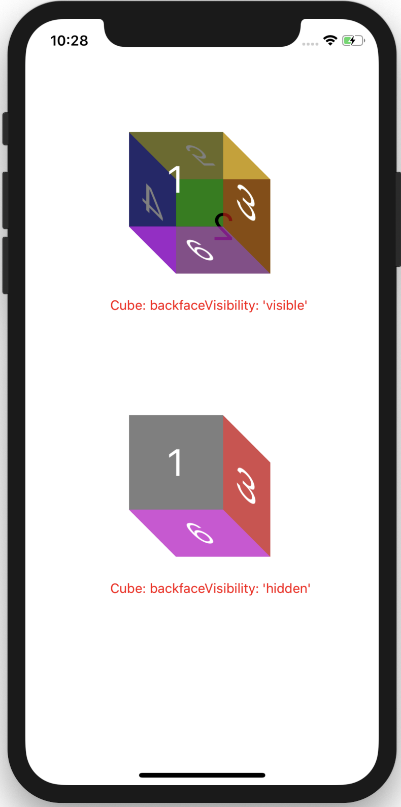
1.5 Cities (Navigation)
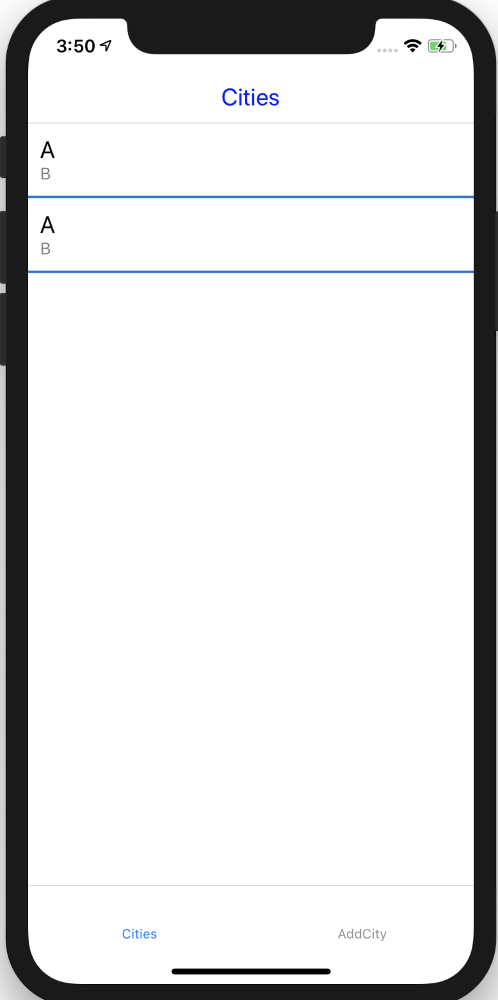
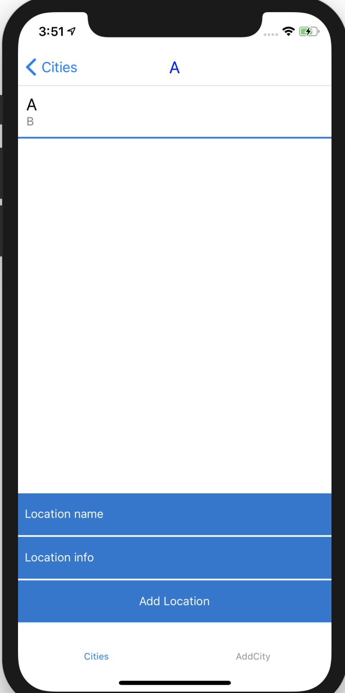
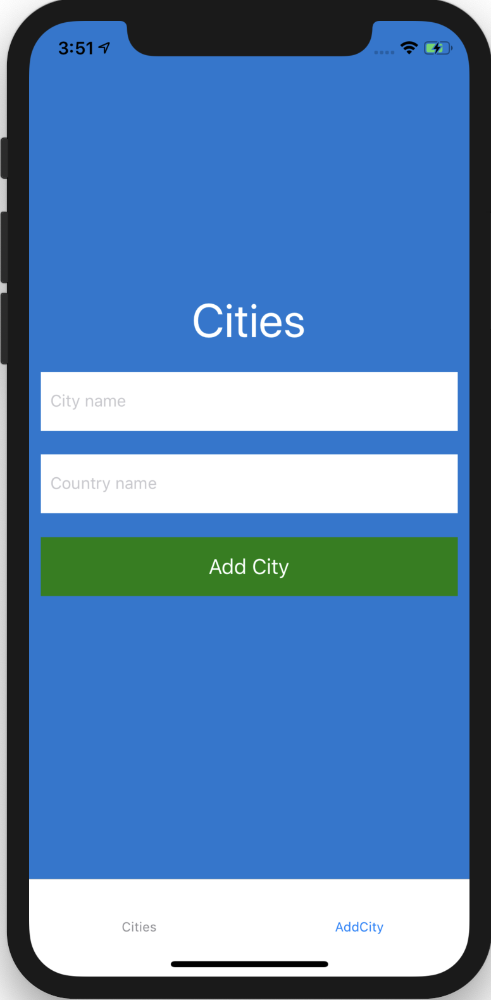
2 Properties
2.1 BorderProperties
There are only four categories of border properties:
borderColorborderRadiusborderStyleborderWidth

2.2 BorderRadius

2.3 MarginProperties

2.4 PaddingProperties

2.5 TextProperties

2.6 ShadowProperties
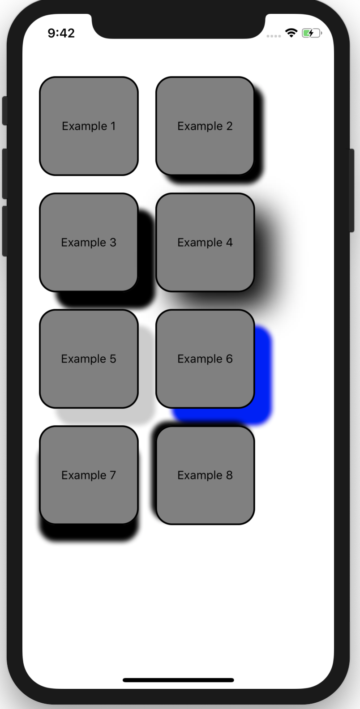
2.7 ElevationProperties
- On iOS, elevation is ignored; all components retain the same z-order, so whatever component is last in the layout is on top
- On Android, elevation is used, and the z-order is changed
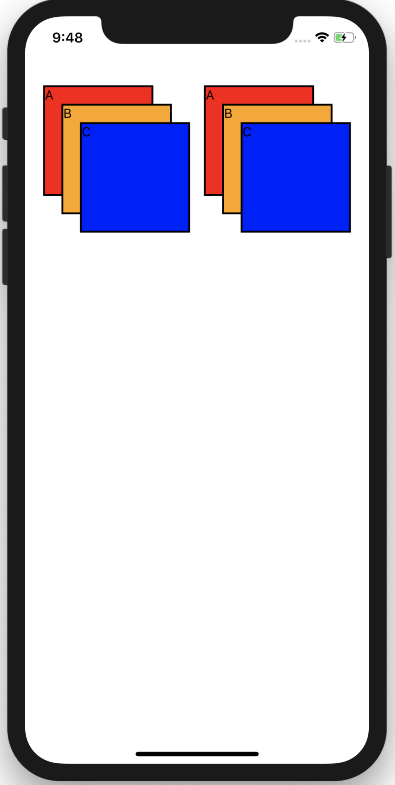
3 Transformation
The transform style supports the following properties:
perspectivetranslateXandtranslateYrotateX,rotateY, androtateZ(rotate)scale,scaleX, andscaleYskewXandskewY
3.1 TransformationTranslate
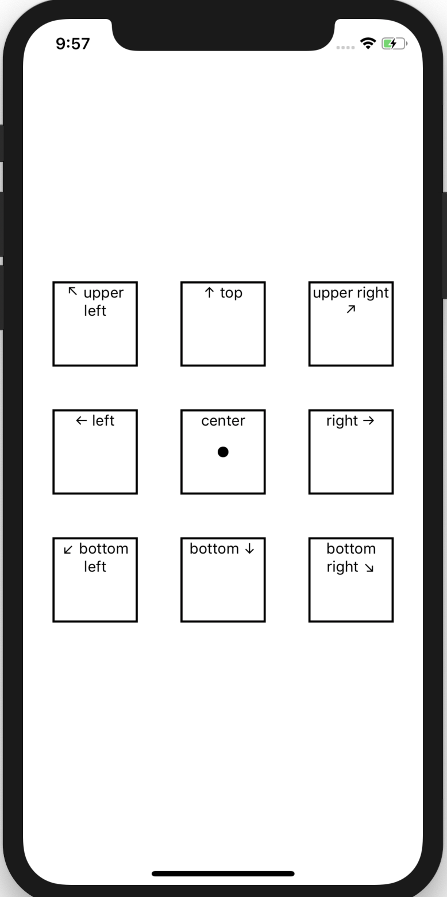
3.2 TransformationRotate
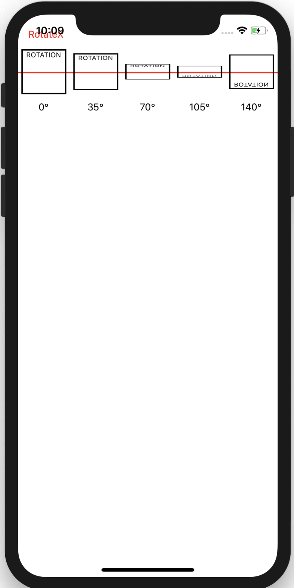
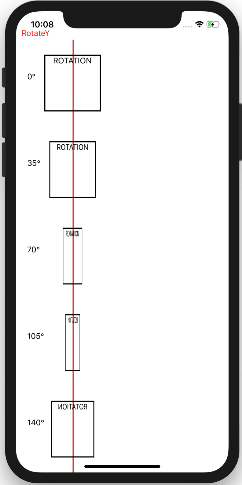
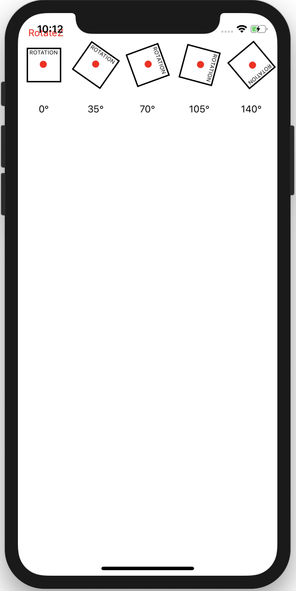
3.3 TransformationScale

3.4 TransformationSkew

4 Flex
4.1 Flexbox
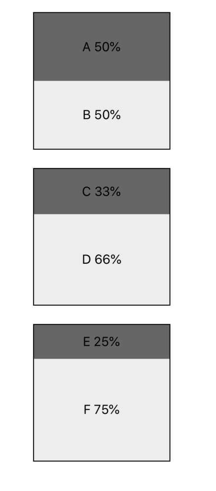
4.2 FlexDirection
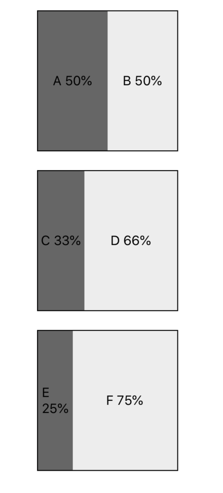
4.3 FlexJustifyContent
justifyContent defines how space is distributed between and around flex items along the primary axis of the container (the flex direction).
justifyContent is declared on the parent container. Five options are available:
- center
- fixStart
- fixEnd
- space-around
- space-between

4.4 FlexAlignItems
alignItems defines how to align children along the secondary axis of their container. This property is declared on the parent view.
There are four possible values for alignItems: (stretch is the default)
stretchcenterflex-startflex-end

4.5 FlexAlignSelf

4.6 FlexWrap